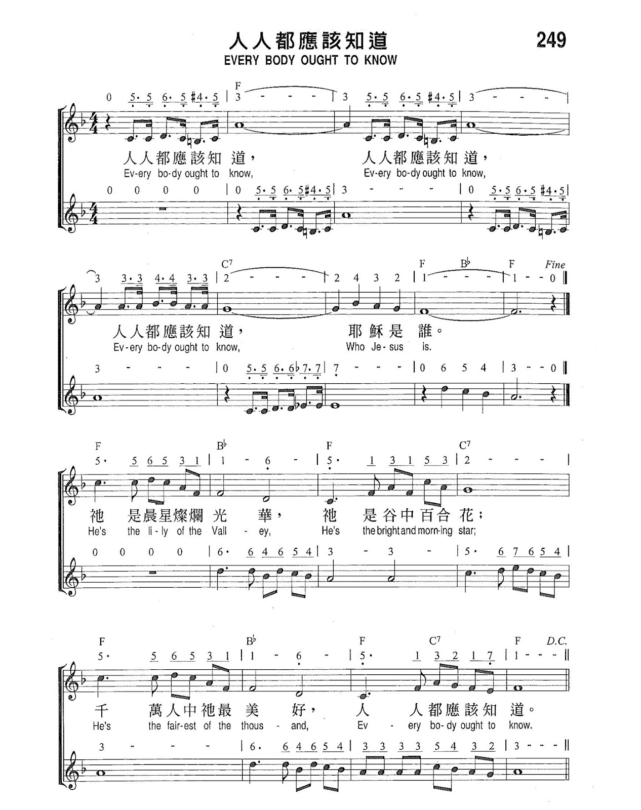
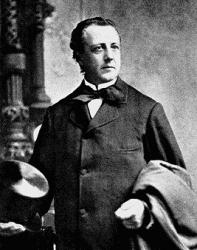

|
|
【人人都應該知道】 |
|
Refrain: (sing first refrain twice) 1 He's the Lily of the Valley, 2 On the cross He died for sinners,
|
|
|
人人都應該知道 http://jesusloveshk.blogspot.com/2015/07/chord-056-100.html
 |
|
|
|
|

人人都應該知道 Everybody Ought to Know （詩班） - 第十三屆聖詩頌唱會 https://www.youtube.com/watch?v=cvvs5M-AwfQ -
人人都應該知道/耶穌恩友 Everybody Ought to Know / What a Friend We Have in Jesus ·
聖歌特讚隊
https://www.youtube.com/watch?v=Bvgr23s5KJI - Bill & Gloria Gaither - Everybody Ought to Know (Live)
https://www.google.com/search?q=+Everybody+Ought+to+Know&biw=1036&bih=682&sxsrf=ALiCzsaNvKEKWuLYgENguvGjVlPmreERWg%3A1655178762065&ei=CgaoYsLOA8mRseMPwNyLoAs&ved=0ahUKEwjC-5uxhaz4AhXJSGwGHUDuArQ4ChDh1QMIDg&uact=5&oq=+Everybody+Ought+to+Know&gs_lcp=Cgdnd3Mtd2l6EAMyBggAEB4QBzIGCAAQHhAHMgYIABAeEAcyBggAEB4QBzIGCAAQHhAHMgYIABAeEAcyBggAEB4QBzIGCAAQHhAHMgUIABDLATIFCAAQywFKBAhBGABKBAhGGABQAFgAYMcCaABwAXgAgAFPiAFPkgEBMZgBAKABAcABAQ&sclient=gws-wiz
| Text: | Everybody Ought to Know |
| Tune: | [Ev'rybody ought to know] |
| Arranger: | Norman Johnson |
| Stanza melody: | C. C. Converse |
| Short Name: | Charles C. Converse |
| Full Name: | Converse, Charles C. (Charles Crozat), 1832-1918 |
| Birth Year: | 1832 |
| Death Year: | 1918 |
Pseudonyms: Nevers,
Karl Reden, Revons
=================================
Charles Crozat Converse LLD USA 1832-1918.

Born in Warren, MA, he went to Leipzig, Germany to study law and philosophy, as well as music theory and composition under Moritz Hauptmann, Friedrich Richter, and Louis Plaidy at the Leipzig Conservatory. He also met Franz Liszt and Louis Spohr. He became an author, composer, arranger and editor. He returned to the states in 1859 and graduated from the Albany, NY, Law School two years later. He married Lida Lewis. From 1875 he practiced law in Erie, PA, and also was put in charge of the Burdetta Organ Company. He composed hymn tunes and other works. He was offered a DM degree for his Psalm 126 cantata, but he declined the offer. In 1895 Rutherford College honored him with a LLD degree. He spent his last years in Highwood, NJ, where he died. He published “New method for the guitar”, “Musical bouquet”, “The 126th Psalm”, “Sweet singer”, “Church singer”, “Sayings of Sages” between 1855 and 1863. he also wrote the “Turkish battle polka” and “Rock beside the sea” ballad, and “The anthem book of the Episcopal Methodist Church”.
John Perry
What a friend we have in Jesus, All our sins and griefs to bear
我知道救主活著」（聖詩選輯，第76首）。
將這首聖詩的歌詞提供給全班，並將學生分成四組。指派各組閱讀一段不同的歌詞。給予足夠的時間後，提出下列問題：
-
這首聖詩中用了哪些詞句來描述耶穌基督是誰，又為我們做了甚麼事？
（答案應包括「是我永遠主」、「好友在天上」、「先知、祭司、王」及「救世主」祂賜我們偉大的愛、替我們求天父、照顧我們、安慰我們、使我們有生命。） -
這首聖詩用哪些詞句描述對耶穌基督的見證給我們的影響？
（答案應包括「安慰」和「鼓舞歡欣」。）
「耶穌是誰？」這問題從祂降生到現在，不知有多少人想知道答案，有人認為祂是位先知，有人認為祂是聖人，也有人認為祂是神的兒子，究竟耶穌是誰呢？從肉身來看，祂是猶太人，是一個木匠的兒子，但從屬靈來看，祂是彌賽亞，也是神的兒子，是拯救罪人脫離罪污的救世主，祂已按照真神的計畫完成了救恩，使人類可以藉著祂的名，脫離罪和死亡，得享永遠的生命。 (小允
摘要)
這問題從耶穌降生到現在不知道有多少人想要知道清楚，也有很多人雖然花了很多時間和精神去研究這問題，但仍然沒有得到確實可靠的答案。現在讓我們也來談談這問題，但願聖靈帶領，讓我們真知道：「耶穌是誰？」
耶穌在世傳道的時候，那些自以為很虔誠的猶太人，尤其是文士和法利賽人（當時猶太人的學者和宗教家），他們不但不把祂當先知也不把祂當做偉人，反而把祂當做違背律法的「大罪人」，因此最後把祂釘死在十字架上。他們這樣把神的兒子釘死在十字架上，還以為他們是為神大發了熱心護教，替真神除掉一個大罪人。
耶穌的門徒們在五旬節得聖靈之後，更清楚地知道耶穌是誰。但是使徒們死後，教會慢慢墮落而失去了真理，最後，聖靈離開了失去真理的教會。教會失去真理又失去聖靈的引導，自然，對「耶穌是誰？」這問題再也不能知道得很清楚，於是這問題就成為基督徒和神學家討論，甚至爭論的事。
一直到今天，這科學發達，無神論哲學思想盛行的時代，很多人只把祂當著一位普通的教主，或把祂當做一位偉人。更讓我們傷心的是，連那些基督徒和神學家們也有些人不再當祂為救主或神的兒子，而只當祂為一位能夠行善或善於教導人的偉人而已。
佛教的教主釋迦牟尼是誰呢？回教的默罕默德是誰呢？哲學家蘇格拉底是誰呢？這些問題我們可以完全不知道，因他們對我們的生活沒有多大關係，對我們的生命更沒有關係。但是耶穌是誰？這問題卻對我們有很大的關係，因為我們認不認識祂對我們今生、來生都有很密切的關係，而且我們是否相信祂，接受祂為我們的救主，這將要決定我們將來上天國得永生或下地獄受永刑。
由以上所說的我們可以知道「耶穌是誰？」這問題對我們一生和將來永遠的生死關係非常地大，因此這實在是值得我們多花時間，專心又全力地去研究的問題。
主耶穌是誰？讓我們分析、討論如下：
一、耶穌是猶太人所盼望的彌賽亞──基督
彼得的弟弟安得烈聽到施洗約翰的話，認識了他們所盼望的彌賽亞，他先找（到）自己的哥哥彼得，趕快把這至好的消息報告給他聽。他怎麼報告的呢？他說：「我們遇見彌賽亞了。」於是領他哥哥去見主耶穌（約翰福音一章35-42節）。
當主耶穌在雅各井旁邊和撒瑪利亞的婦人談活水的時候，也談到時候將到（救主來時）真正敬拜天父的人，要用心靈和誠實拜祂。那婦人卻說：「我知道彌賽亞要來，祂來了，必將一切的事都告訴我們。」因此主耶穌就明白地告訴她：「這和妳說話的（我）就是祂（彌賽亞）。」（約翰福音四章22-26節）。
彌賽亞是「受膏者」的意思，希臘文叫：「基督」。舊約時代需受膏才能任職的有祭司、先知、君王，但一般是指著受膏的君王。君王治理、統治全國，賢明的君王能領導百姓復興國家，拯救國家和民族。當時敬拜真神的猶太人所盼望、所期待的是一位特定的王，將要來的那位救主。
然而當時的猶太人以為先知所預言的那將要來的彌賽亞是要來拯救已被毀滅的屬世猶太國（以色列），成為猶太國的王。因為當時猶太人被羅馬帝國所滅，受羅馬人的統治，生活沒有自由而痛苦，更盼望這神所預備、所應許的救主早些來拯救他們脫離敵人（羅馬人）的手。甚至主的門徒也因此誤會，曾為了想當主耶穌將來的左右相而相爭（馬可福音十章34-41節；路加福音二十二章24節）。
可是主耶穌的國不屬於這世界，祂是來拯救屬靈的以色列國──教會，是屬靈猶太人的彌賽亞──王，要拯救祂屬靈王國的百姓──信徒（約翰福音十八章33-37節；路加福音二十三章3節）。
二、耶穌是神的兒子
當主耶穌受洗後，從水裡上來時，以及主耶穌在山上變貌時，從天上有聲音說：「這是我的愛子，我所喜悅的。」真神這樣清楚地告訴過我們，主耶穌就是神的兒子（馬太福音三章17節，十七章5節）。
有一次，主耶穌問門徒：「別人說我人子是誰？」他們回答：「有人說祢是施洗約翰，有人說是以利亞，又有人說是耶利米，或是先知裡的一位。」主耶穌又問：「那麼你們說我是誰？」西門彼得回答說：「祢是基督，是永生神的兒子。」主耶穌聽了，對他說：「約拿的兒子（巴約拿）西門，你是有福的，因為這不是屬血肉的指示你的，乃是我在天上的父指示的。」（馬太福音十六章13-17節）。
有位生來就瞎眼的，蒙主醫治而能看見，但只因為他勇敢為主作見證，所以受猶太人的逼迫，被趕出會堂。主耶穌後來遇見他，要把救恩傳給他，說：「你信神的兒子嗎？」他回答說：「主阿，誰是神的兒子，叫我信祂呢？」主耶穌說：「你已經看見祂，現在和你說話的就是祂。」他說：「主阿，我信。」他說了就拜主耶穌（約翰福音九章35-38節）。
由這些事我們可以知道，主耶穌和真神直接、間接地啟示我們主耶穌就是神的兒子，我們還有什麼值得懷疑的呢？
三、耶穌是天地的主宰，是創造萬物的獨一真神
前面我們說過，主耶穌是神的兒子，為什麼祂又是真神本身呢？
我們是人，是被造的，天使也是被造的，我們人類一個人只有一個靈魂。魂就是我們說的「我」，這我不能跑進別人的身體裡去變成另一個人，而人死的時候靈魂就會離開自己的身體。但是真神是造物主，是天地主宰，是萬能的神，祂不是像我們受肉體限制的人，祂的靈可以充滿萬物，是無所不在，又是無所不能的神，所以祂不受限制，祂的靈可以同時存在於不同的地方，甚至無限的地方（以弗所書一章23節）
因此，主耶穌來到世間做人的時候，天上並不因此就沒有真神的靈存在。換句話說，當時，天上有真神，同時地上也有真神的主耶穌傳道，而是同一位神，只是主耶穌是受肉體的限制而已。
因這奇妙的原因，當腓力要求主耶穌說：「求主將父顯給我們看，我們就知足了。」主耶穌卻對他說：「腓力！我與你們同在這樣長久，你還不認識我嗎？人看見了我，就是看見了父，你怎麼說將天父顯給我們看呢？我在父裡面，父在我裡面，你不信嗎？我對你們說的話不是憑著自己說的，乃是住在我裡面的父作祂自己的事。你們當信我，我在父裡面，父在我裡面……。」（約翰福音十四章8-11節）。
由這些話可以知道神與人不同，祂可以同時在天上又在地上，而且可以說：「人看見了我，就是看見了父。」「我在父裡面，父在我裡面。」由此也可以知道主耶穌不是普通的人，是真神，因為這種事在人是不可能的。如果有人說：「我在父裡面，父在我裡面。」別人一定把他當精神病的。
主耶穌最親近的門徒約翰對這一點非常清楚，因此他很有把握又簡單明瞭地向我們見證說：「太初有道（主耶穌），道與神同在，道就是神。這道太初與神同在。萬物是藉著祂造的……。道成了肉身，住在我們中間，充充滿滿的有恩典、有真理。我們也見過祂的榮光，正是父獨生子的榮光。……從來沒有人看見神，只有在父懷裡的獨生子將祂表明出來。」（約翰福音一章1-3節、14節、18節）。
主耶穌如果不是神，祂就沒有資格拯救我們，因為人都有罪，無能、又無權，怎能有權柄赦我們的罪救我們呢？在亞當犯罪時定罪的是真神，所以只有真神有權柄赦免人的罪，因此真神的主耶穌在世也常使用這權柄赦人的罪（路加福音五章20節，七章48節）。
四、耶穌是我們人類的救主
真神為什麼要差天使告訴約瑟，叫他給將要生的孩子取名叫「耶穌」？原來希臘文「耶穌」這名字的原文字義是「耶和華拯救」與希伯來文「約書亞」同義，因此天使也對約瑟說明：「因為祂（主耶穌）要將自己的百姓從罪惡裡救出來。」可見祂是為了拯救人而降生。
主耶穌是那一個民族或國家的救主？祂不是屬世民族或國家的救主，而是全世界屬靈國度的救主。當時的猶太人，甚至主的門徒還沒有得聖靈時，還以為彌賽亞、他們的救主是來拯救屬肉的猶太人，要復興屬肉的以色列國（猶太國）。然而，主耶穌不是要復興屬世的猶太國，因此祂不是屬世猶太國的救主，祂是屬靈猶太國的王，是這屬靈猶太國民的救主。
屬靈的猶太國民是誰呢？就是相信耶穌，受過有赦罪功效的浸禮的人。屬靈的猶太國就是這些受過浸禮，在主寶血裡重生過的真信徒所聚集的真教會，以主耶穌為頭、為王的教會（以弗所書五章23節；啟示錄五章10節）。
主耶穌傳道的時候也救了很多病人，但祂降生為救主，為的是救我們的靈魂，醫治病人救人肉體的疾病只是附帶的，因為肉體的病被治好了之後，有一天還是會死的，因此，祂更用心救人的靈魂，要救回復活或改變後的身體。主醫病趕鬼主要的是為了要藉此證明祂就是全能的真神；也為了證明祂所說的話、所傳的道是真的，而且證明祂是救主。
主耶穌來到世間傳道、受苦、受死，不是單為拯救猶太人，是要拯救世界上所有的人，所以我們常稱祂是「世人的救主」或救世主。
主耶穌是誰？從肉身看來，祂是猶太人，是一個木匠的兒子，但祂不是普通的人。從屬靈方面看，祂是彌賽亞──基督，是神的兒子，是造物主，是天地主宰的真神，是我們人類的救主，祂也為此而生。
主耶穌已經照真神的計劃完成了救恩，使我們能因信靠祂的聖名「耶穌」受洗脫離罪和死亡，得永生，而且除了祂這「耶穌」的名以外別無拯救，因為天下人間沒有賜下別的名，我們可以靠者得救（使徒行傳二章38，四章12節）。（摘《耶穌是誰》，真耶穌教會台灣總會發行）
https://joy.org.tw/goodnews.asp?num=1554